Rural Solar Electrification: Clinics, Schools & Field Posts (Turkana County)
Multi-site solar PV, battery storage and backup generator installation powering clinics, schools and field administration points in Turkana County, near the Kenya–South Sudan border.
Project scope
- Ground-mount and rooftop solar PV installation for clinics, schools and administration points
- Battery storage bank installation for reliable off-grid power
- Backup generator supply and automatic transfer switch (ATS) integration
- Electrical distribution panel installation and wiring
- Multi-site rollout across several facilities in a single programme
Why this project matters
Off-grid and humanitarian-sector facilities in remote counties like Turkana depend on solar-plus-battery systems for essential services — clinics need power for refrigeration and lighting, schools need reliable lighting and connectivity, and field administration points need continuous power for communications. Smartech's project record documents ground-mount and rooftop solar installation, battery storage, and backup generator integration across several facilities in this programme.
This project reflects Smartech’s capability to deliver solar and battery power infrastructure in remote, off-grid locations for humanitarian, health and education facilities — the same capability applied to commercial and residential solar installations across Kenya.
Project photos
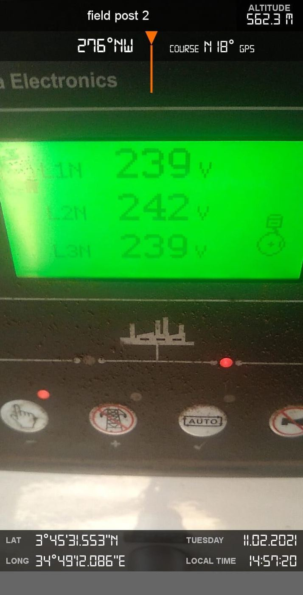
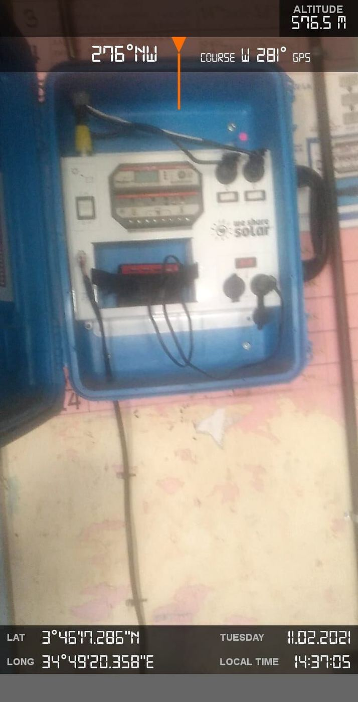
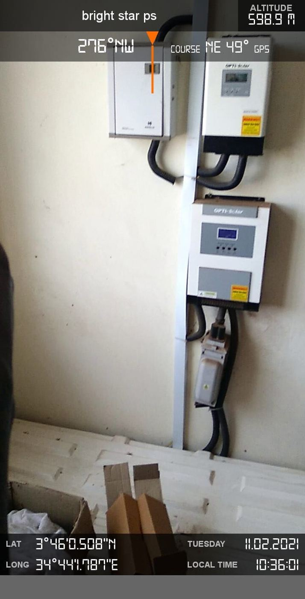
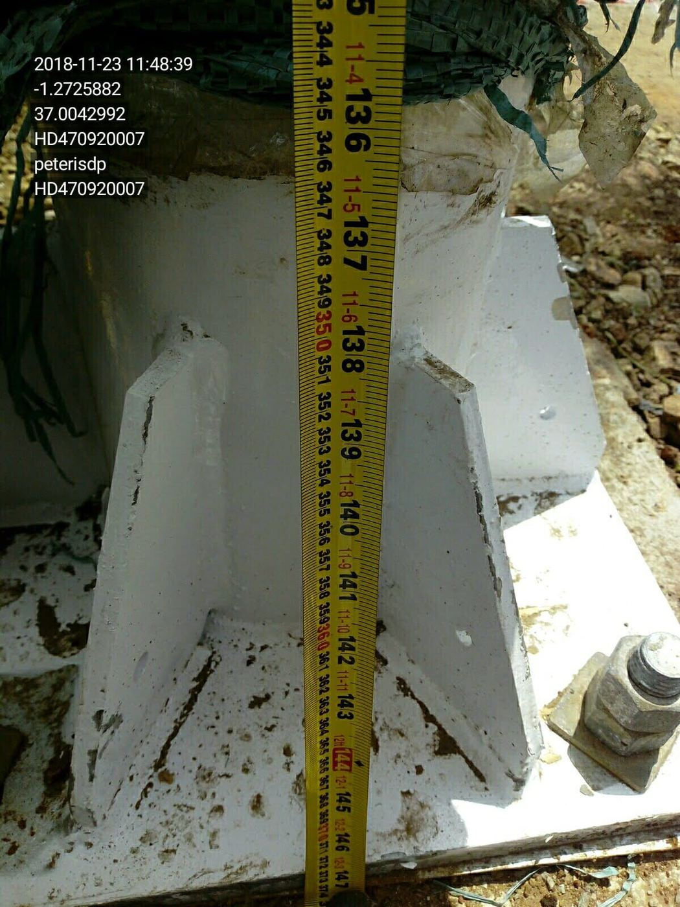
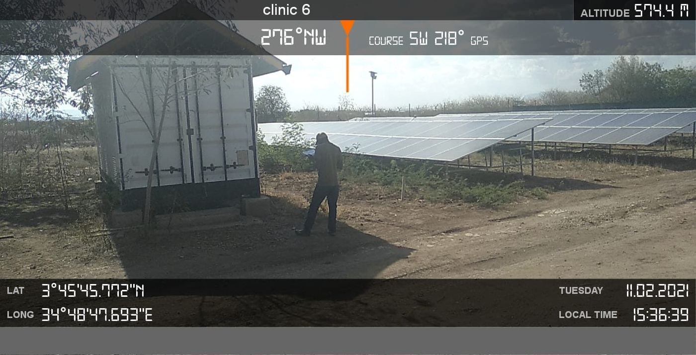
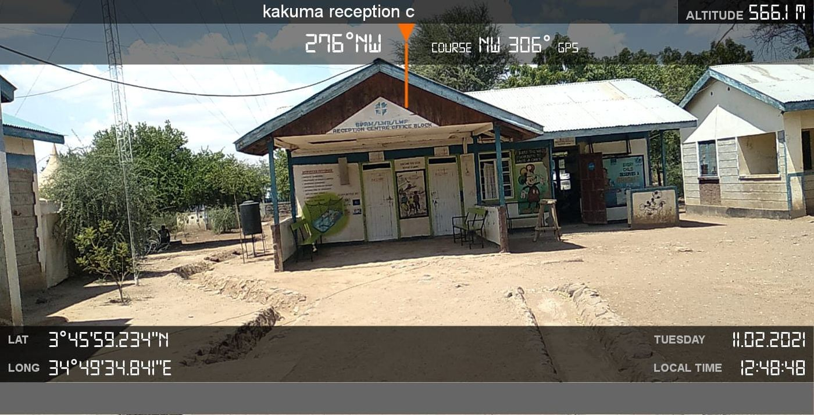
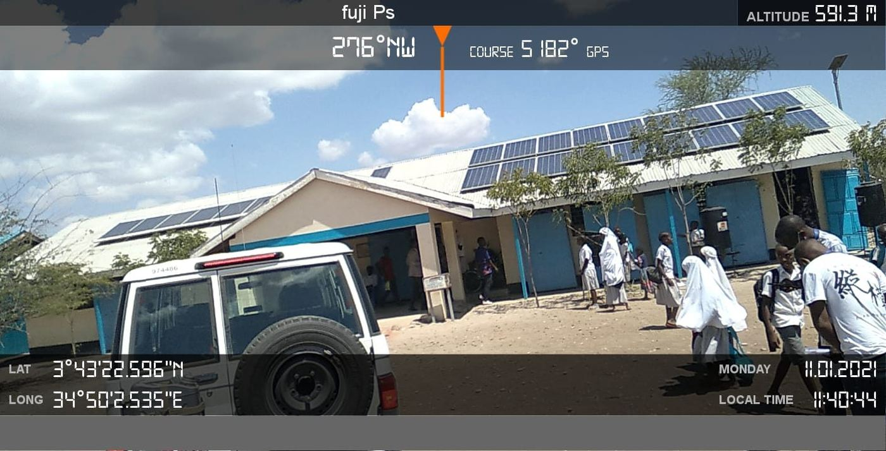
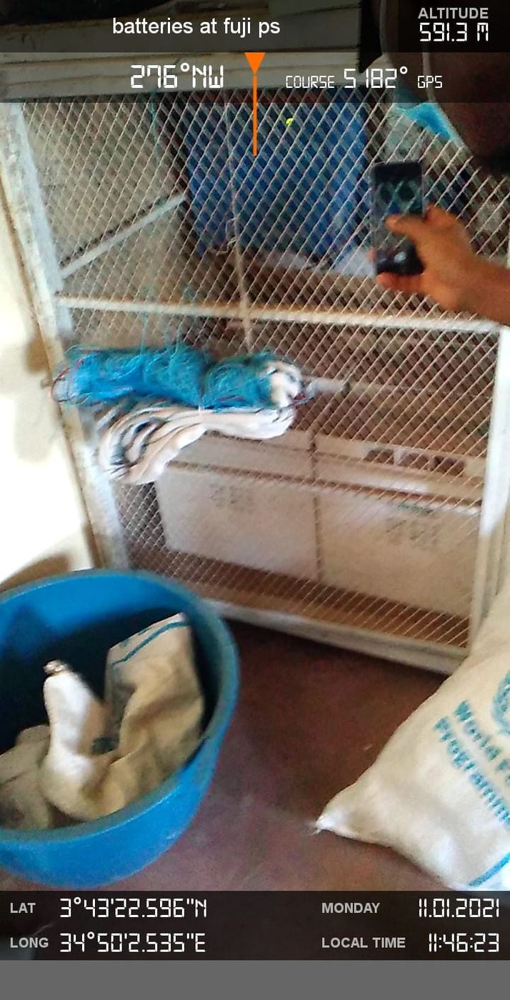
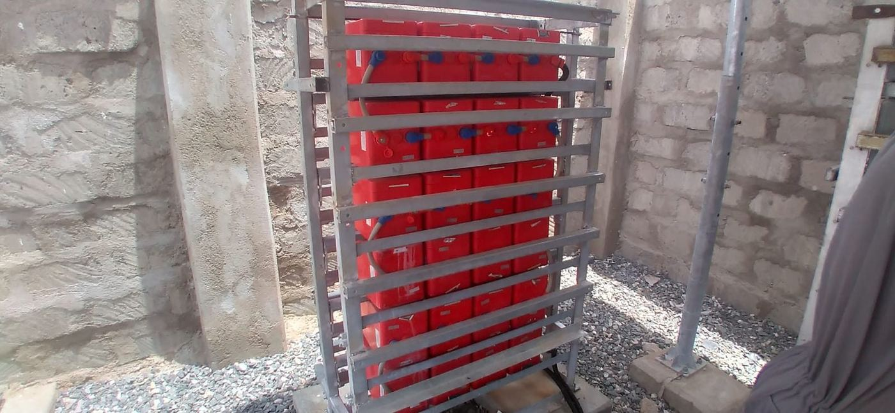
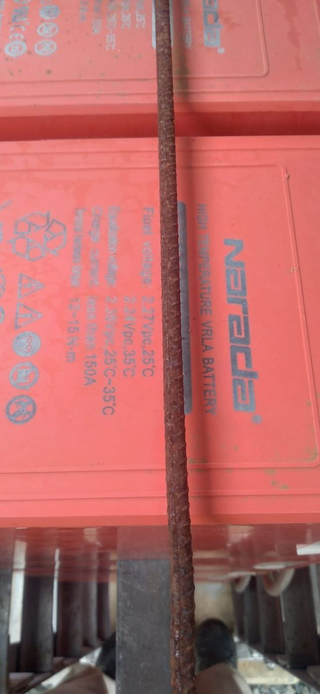
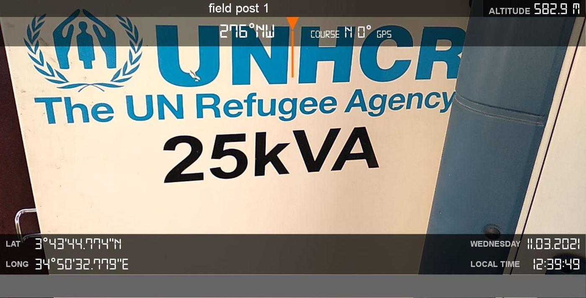

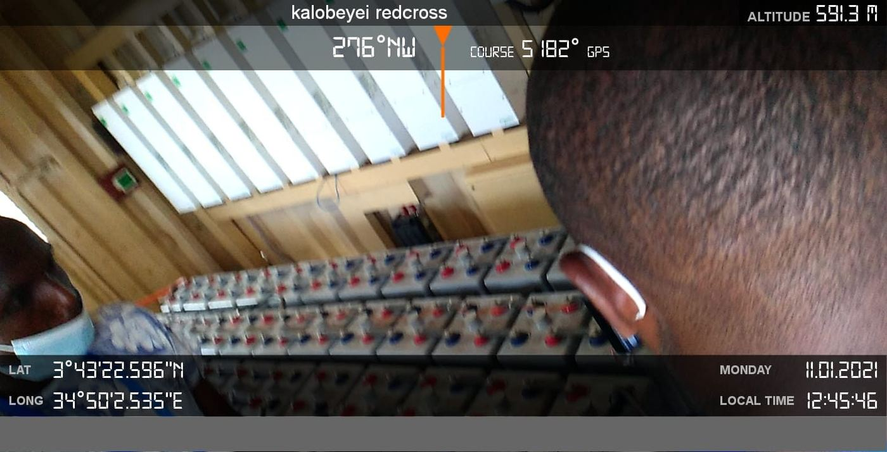
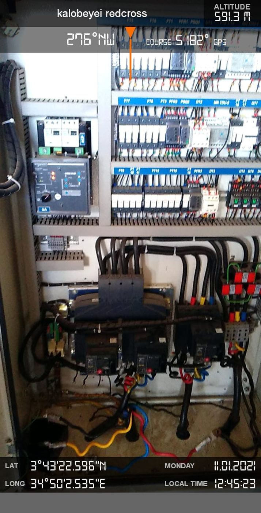
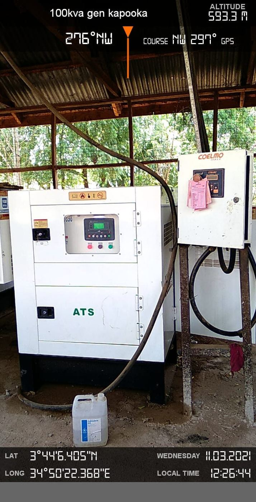
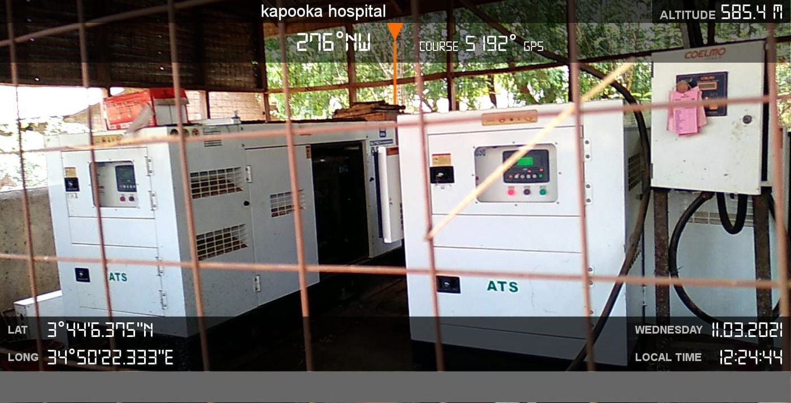